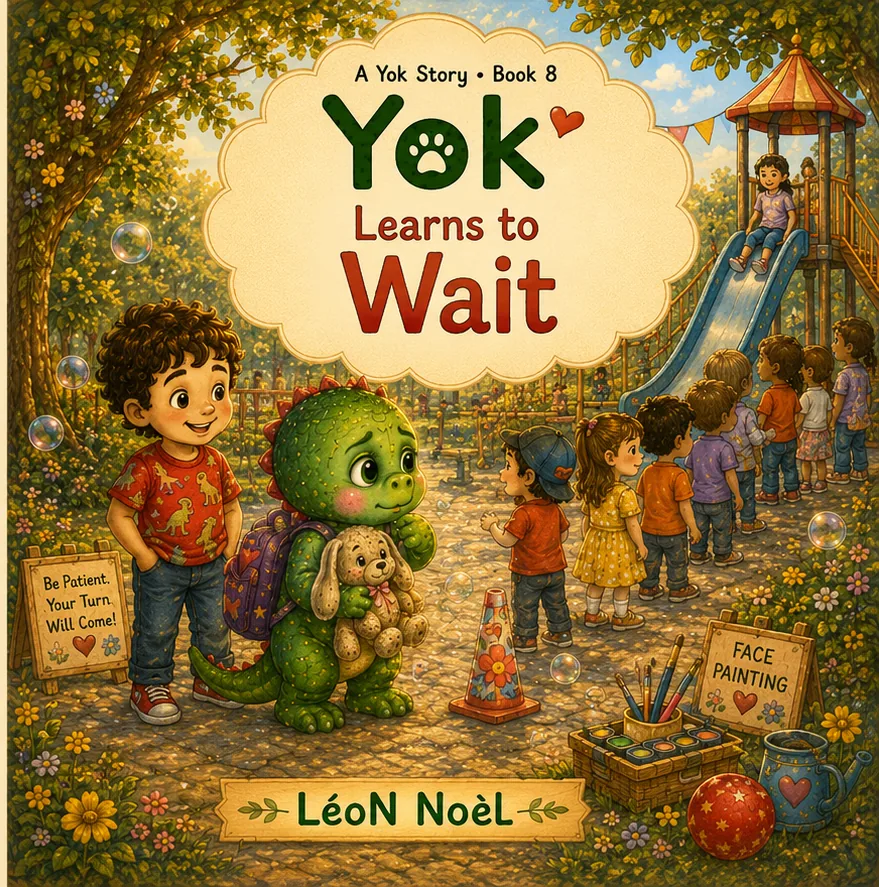

A Yok Story · Ages 3–6
Yok Learns to Wait
Waiting does not make your turn disappear.

Inside the story
Give waiting hands and waiting bodies something useful to do.
A long line feels wiggly, so Yok tries concrete waiting tools: breathing, counting, squeezing, and cheering.
“Be patient” is difficult advice when a young child does not know what patience looks like. Yok experiments with simple actions—breathing, counting, squeezing, and cheering—that make waiting more concrete and easier to practice.
Why this story can help
Give waiting hands and waiting bodies something useful to do.
“Be patient” is difficult advice when a young child does not know what patience looks like. Yok experiments with simple actions—breathing, counting, squeezing, and cheering—that make waiting more concrete and easier to practice.
Good for
- Waiting in lines
- Turn-taking and patience
- Simple self-regulation tools
Looking for a screen-free follow-up? Browse the free printable library →
Keep the story going
Free companion resources.
Printables for home, classroom, library, or a quiet follow-up after reading.
Explore more
Find the next story for this moment.
The Yok world